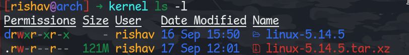
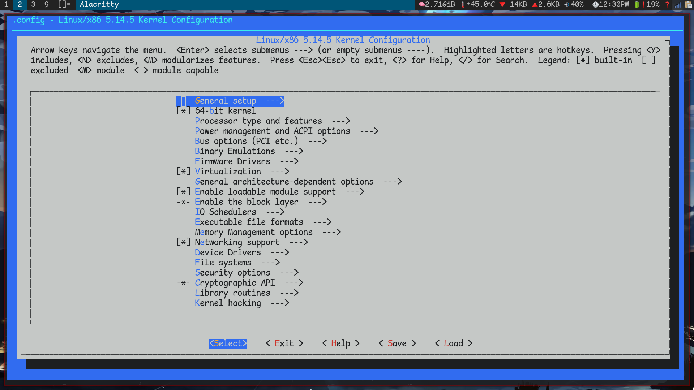

Compile your custom linux kernel
Date: 17 Sept. 2021
Preparation
Install Dependencies
sudo pacman -S base-devel xmlto kmod inetutils bc libelf git --needed
Downloading source and local setup
It is recommended to create a separate build directory for your kernel(s). In this example, the directory kernelbuild will be created in the home directory:
mkdir ~/kernelbuild
cd ~/kernelbuild
Goto kernel.org and download kernel source
wget https://cdn.kernel.org/pub/linux/kernel/v5.x/linux-5.14.5.tar.xz
Note: you can verify signature of the downloaded tarball if you want
Extract tarball
tar -xvJf linux-5.14.5.tar.xz
Check

Kernel configuration
To finalise the preparation, ensure that the kernel tree is absolutely clean; do not rely on the source tree being clean after unpacking. To do so, first change into the new kernel source directory created, and then run the make mrproper command:
cd linux-5.14.5
# cean up the tree
make mrproper
copy config file
zcat /proc/config.gz > .config
make sure all configuration options have values that are required
make olddefconfig
Another option(not recommended)
automatically detect the hardware and creates config based on just that downside is that its not gonna detect anything which is not currently connected
make localmodconfig
Menu driven configuration utility(best option)
make menuconfig
This should look somewhat like:

Here is the main part of research and knowing your hardware, Good Luck 👍 with that.
When all the required configurations are done, save your configurations in .config file.
Build the kernel
We can use -j flag to use multiple cores of cpu while compiling
make -j4
This process will normally take some time so grab a cup of coffee(it took around 1 hour for me)
Installation
Install the modules
Once the kernel has been compiled, the modules for it must follow. First build the modules:
make modules -j4
Change to root user
sudo su
Then install the modules.
make modules_install -j4
This will copy the compiled modules into /lib/modules/<kernel_version>-<config_local_version>. For example, for kernel version 5.14 installed above, they would be copied to /lib/modules/5.14.5-ARCH. This keeps the modules for individual kernels used separated.
Copy the kernel to /boot directory
The kernel compilation process will generate a compressed bzImage (big zImage) of that kernel, which must be copied to the /boot directory and renamed in the process. Provided the name is prefixed with vmlinuz-, you may name the kernel as you wish.
# cp -v arch/x86_64/boot/bzImage /boot/vmlinuz-<kernel_name>
cp -v arch/x86_64/boot/bzImage /boot/vmlinuz-linux514
Make initial RAM disk
Generate initramfs image file
You are free to name the initramfs image file whatever you wish when generating it. However, it is recommended to use the linux<major_revision><minor_revision> convention. For example, the name ‘linux514’ was given as ‘5’ is the major revision and ‘14’ is the minor revision of the 5.14 kernel. This convention will make it easier to maintain multiple kernels, regularly use mkinitcpio, and build third-party modules.
# mkinitcpio -k <kernel_version> -g /boot/initramfs-<kernel_name>.img
mkinitcpio -k 5.14.5 -g /boot/initramfs-linux514.img
Copy System.map file
The System.map file is not required for booting Linux. It is a type of “phone directory” list of functions in a particular build of a kernel. The System.map contains a list of kernel symbols (i.e function names, variable names etc) and their corresponding addresses.
Copy System.map to /boot, appending your kernel’s name to the destination file. Then create a symlink from /boot/System.map to point to /boot/System.map-<kernel_name>:
cp System.map /boot/System.map-<kernel_name>
ln -sf /boot/System.map-<kernel_name> /boot/System.map
Summary
After completing all steps above, you should have the following 3 files and 1 soft symlink in your /boot directory along with any other previously existing files:
- Kernel:
vmlinuz-<kernel_name> - Initramfs:
Initramfs-<kernel_name>.img - System Map:
System.map-<kernel_name> - System Map kernel symlink
Bootloader configuration
For grub bootloader
grub-mkconfig -o /boot/grub/grub.cfg
Refrences
- https://wiki.archlinux.org/title/Kernel/Traditional_compilation
- https://www.kernel.org/